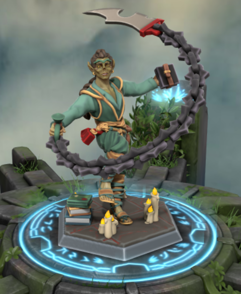

Nahran Umbra

Summary and Background
Skills, Bonuses and Abilities
| Skill |
Bonus |
Ability |
Score |
Bonus |
| Acrobatics |
+5 |
Strength |
11 |
+0 |
| Animal Handling |
+3 |
Dexterity |
14 |
+2 |
| Arcana |
+1 |
Constitution |
12 |
+1 |
| Athletics |
+0 |
Intelligence |
12 |
+1 |
| Deception |
-2 |
Wisdom |
17 |
+3 |
| History |
+6 |
Charisma |
7 |
-2 |
| Insight |
+6 |
Strength Save |
|
+3 |
| Intimidation |
-2 |
Dexterity Save |
|
+5 |
| Investigation |
+1 |
Constitution Save |
|
1 |
| Medicine |
+3 |
Intelligence Save |
|
1 |
| Nature |
+4 |
Wisdom Save |
|
+3 |
| Perception |
+3 |
Charisma Save |
|
-2 |
| Performance |
-2 |
| Persuasion |
-2 |
| Religion |
+1 |
| Sleight of Hand |
+2 |
| Stealth |
+2 |
| Survival |
+3 |
Weapons
| Name |
Attack Bonus |
Damage |
| Rope Dart |
+5 |
1d6(+2) |
| Unarmed Attack |
+5 |
1d6(+2) |
| Darts |
+5 |
1d6(+2) |
| Shortsword |
+5 |
1d6(+2) |
| Shortbow |
+5 |
1d6(+2) |
Note: When the Astal Arms are out there is a +6 Attack Bonus and a +3 to Damage.
Equipment
- Robes
- Writing Kit
- Book (about Nature)
- Alchemist Supplies
- Rope 50ft
- Dungeoneer's Pack
- 10 Darts
- A Needle that Can Never Bend
- Stuffed Ferret
- Potions
- 2 Healing (2d4+2)
- 1 Antitoxin
- 1 Regular Acid (2d6)
- 1 Rockroach Acid (1d6+2)(without wiping +1d6)
- 1 Special Acid (unknown)
- 2 Acid Supplies Worth
- 4 Alchemist Mercy
- 2 Blasting Powder (3d6 dc save 14)
- Magic Wolfsbane
- Cracked Driftglobe (20ft dim light)
- 17sp, 127gp, 6pp
- Silver Hand Medallion
Languages
- Common
- Gith
- Orc
- Deep Speach
Features and Traits
- Mage Hand (cantrip), Shield (1/day), Detect Thoughts (1/day)
- Library Access
- Ki Points: 5
- Save DC: 14
- Flurry of Blows
- Patient Defence
- Step of the Wind
- Deflect Missiles
- Arms of Astral Self
- Slow Fall
- Extra Attack
- Stunning Strike